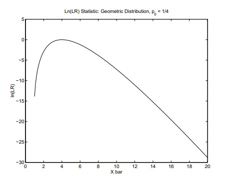

10 유의성 검정
10.1 가설
\(H_0\)와 \(H_a\)는 확률모형, 또는 동등하게는 모집단 특성에 대한 진술이다.
귀무가설(null hypothesis) \(H_0\)는 보통 효과가 없음, 차이가 없음 등을 의미한다.
- 모수로 표현하면 일반적으로 \(H_0: \theta = \theta_0\), \(H_0: \theta \le \theta_0\), 또는 \(H_0: \theta \ge \theta_0\)와 같이 쓴다. 여기서 \(\theta_0\)는 연구자가 지정한 값이다.
- 귀무가설에는 등호가 포함되어야 한다는 점이 중요하다.
대립가설(alternative hypothesis) \(H_a\)는 귀무가설이 거짓임을 나타내며, 일반적으로 \(H_a: \theta \ne \theta_0\), \(H_a: \theta > \theta_0\), 또는 \(H_a: \theta < \theta_0\)와 같이 쓴다.
10.2 증거 평가
- 유의성 검정은 \(H_0\)에 대한 검정이다. 전략은 다음과 같다.
- 과학적 가설을 \(H_0\)와 \(H_a\)로 번역한다.
- \(H_0\)가 참이라고 가정하고 시작한다.
- 자료를 수집한다.
- 자료가 \(H_0\)와 모순되는지 판단한다.
- p-값은 자료가 귀무가설과 얼마나 강하게 모순되는지를 나타내는 척도이다.
- 작은 p-값은 \(H_0\)에 반대되는 강한 증거이다.
검정통계량
- 정의: 검정통계량(test statistic)은 자료와 \(\theta_0\)의 함수이다.
- 검정통계량은 \(H_0\)와 \(H_a\)를 구별할 수 있도록 선택된다.
- 일반적으로 \(\theta\)의 추정량을 포함한다.
- 익숙한 검정통계량의 예는 다음과 같다.
- \((a)\quad Z = \dfrac{\hat\theta-\theta_0}{SE(\hat\theta \mid H_0)}\)
- \((b)\quad t = \dfrac{\bar X-\mu_0}{S_X/\sqrt n}\)
- \((c)\quad X^2 = \dfrac{(n-1)S_X^2}{\sigma_0^2}\)
\(p\)-값
- 검정통계량을 \(T\), 관측된 \(T\)의 값을 \(t_{obs}\)라고 하자.
- p-값은 자료와 \(H_0\) 사이의 일관성을 측정하는 척도이다.
- p-값은 다음과 같이 정의된다.
\[ p\text{-value} = P\left(T \text{가 } H_a \text{의 방향에서 } t_{obs}\text{만큼 또는 그보다 더 극단적일 확률} \mid H_0\right). \]
- 작은 \(p\)-값은 자료가 \(H_0\)와 일관적이지 않다는 뜻이다.
- 즉, 작은 \(p\)-값은 \(H_0\)에 반대되는 증거로 해석된다.
- 흔한 오류 I: 많은 연구자는 큰 \(p\)-값을 \(H_0\)에 대한 증거로 해석한다.
- 이는 올바르지 않다. 큰 p-값은 \(H_0\)에 반대되는 증거가 거의 없거나 없다는 뜻이다.
- 예를 들어, 표본크기 \(n=1\)인 표본이 \(N(0,20^2)\)에서 추출되었다고 하고, \(H_0: \mu = 100\) 대 \(H_a: \mu \ne 100\) 검정을 생각해 보자.
- 실제 평균이 \(\mu=105\)이고 \(X=101\)이 관측되었다고 하자.
- \(Z\) 통계량은 다음과 같다.
\[ z_{obs} = \frac{101-100}{20} = 0.05 \]
- 그리고 \(p\)-값은 다음과 같다.
\[ p\text{-value} = 2\{1-\Phi(0.05)\}=2(1-0.5199)=0.9601 \]
\(p\)-값은 크지만, 자료가 \(H_0\)가 참이라는 강한 증거를 제공하는 것은 아니다.
흔한 오류 II: 많은 연구자는 매우 작은 \(p\)-값을 큰, 즉 중요한 효과가 발견되었다는 뜻으로 해석한다.
- 이는 올바르지 않다.
- 매우 작은 \(p\)-값은 \(H_0\)에 반대되는 강한 증거이다.
- 하지만 큰 효과가 발견되었다는 증거는 아니다.
- 예: 감기 표준 치료법이 모집단의 \(62\%\)에서 증상을 완화한다고 하자.
- 한 연구자가 새로운 치료법을 개발하고 \(H_0: p=0.62\) 대 \(H_a: p>0.62\)를 검정하고자 한다. 일반적인 검정통계량은 다음과 같다.
\[ Z = \frac{\hat p-p_0}{\sqrt{\frac{p_0(1-p_0)}{n}}} \]
여기서 \(p_0=0.62\)이다.
- 새로운 치료법이 표본크기 \(n=3{,}000{,}000\)인 표본에서 \(62.1\%\)의 증상을 완화한다면, 관측된 검정통계량의 값은 다음과 같다.
\[ z_{obs}=\frac{0.621-0.62}{\sqrt{\frac{0.62(1-0.62)}{3{,}000{,}000}}}=3.5684 \]
- \(p\)-값은 \(P(Z>3.5684\mid H_0)=0.00018\)이다.
- 이는 \(H_0\)에 반대되는 강한 증거이지만, 효과크기는 매우 작다.
- 우도(likelihood)를 사용해 검정통계량을 찾을 수 있다.
- \(H_0: \theta=\theta_0\)를 일측 또는 양측 대립가설에 대해 검정하기 위한 검정통계량을 찾는 한 가지 방법은 우도비를 살펴보는 것이다.
\[ LR = \frac{L(\theta_0 \mid X)}{\max_{\theta} L(\theta \mid X)} \]
분모의 최대화는 \(H_a\)를 만족하는 모든 \(\theta\)에 대해 수행한다.
- \(LR\)은 \(H_0\)하에서 자료가 관측될 확률과 \(H_a\)하에서 자료가 가질 수 있는 최대 확률의 비율이다.
- \(LR\)은 \(LR \in (0,1)\)을 만족한다.
- 작은 \(LR\) 값은 \(H_0\)에 반대되는 증거로 해석된다.
- 예: \(Geom(p)\)에서 추출한 무작위 표본을 이용해 \(H_0: p=p_0\) 대 \(H_a: p\ne p_0\)를 검정한다고 하자.
- \(p\)의 최대우도추정량은 \(\hat p=1/\bar X\)임을 떠올리자.
- 우도비는 다음과 같다.
\[ LR = \frac{(1-p_0)^{n(\bar X-1)}p_0^n}{(1-1/\bar X)^{n(\bar X-1)}(1/\bar X)^n} =\left(\frac{1-p_0}{1-1/\bar X}\right)^{n(\bar X-1)} \bar X^n p_0^n \]
- 다음 그림은 \(n=10\), \(p_0=0.25\)인 특수한 경우에 대해 \(\bar X\)에 따른 \(LR\) 통계량의 로그를 그린 것이다.

- 위 그림은 \(\bar X\)가 4보다 상당히 크거나 상당히 작을 때 로그 우도비 통계량이 작아짐을 보여준다.
- \(\bar X=4 \Longrightarrow 1/\bar X=0.25=p_0\)이며, \(\bar X=4\)이면 \(LR\) 통계량은 1이다. 즉, \(LR\) 통계량의 로그는 0이다.
- 우도비를 검정통계량으로 사용하려면 귀무가설이 참일 때의 표본분포를 결정해야 한다.
- 이는 상당히 어려울 수 있지만, 다행히 사용하기 쉬운 큰 표본 결과가 있다.
- \(\theta\)가 스칼라이고 특정 정칙조건이 만족되면, \(-2\ln(LR)\)의 점근적 귀무분포는 \(\chi^2_1\)이다.
10.3 일표본 \(Z\) 검정
- 검정통계량의 형태.
- \(H_0: \theta=\theta_0\)를 \(H_a: \theta\ne\theta_0\), \(H_a: \theta>\theta_0\), 또는 \(H_a: \theta<\theta_0\) 중 하나에 대해 검정하고자 한다고 하자.
- 또한 \(\theta\)의 추정량 \(T\)가 다음을 만족한다고 하자.
\[ T \mid H_0 \sim N\left(\theta_0, \frac{\omega_0^2}{n}\right) \]
그리고 \(\omega_0^2\)의 추정량 \(W_0^2\)가 있어 \(H_0\)가 참일 때 \(W_0^2 \xrightarrow{prob} \omega_0^2\)를 만족한다고 하자.
\(\omega\)의 아래첨자 0은 \(H_0\)하에서의 분산이 \(\theta_0\)의 함수일 수 있음을 상기시킨다.
합리적인 검정통계량은 다음과 같다.
\[ Z = \frac{T-\theta_0}{W_0/\sqrt n} \]
표본크기가 크면 \(H_0\)하에서 \(Z\)의 분포는 근사적으로 \(N(0,1)\)이다.
\(p\)-값: \(z_{obs}\)를 관측된 검정통계량이라고 하자. 그러면 \(H_0\)를 \(H_a\)에 대해 검정할 때의 \(p\)-값은 다음과 같다.
- 대립가설이 \(H_a: \theta \ne \theta_0\)이면 \(1-P(-|z_{obs}|\le Z\le |z_{obs}|)=2\{1-\Phi(|z_{obs}|)\}\);
- 대립가설이 \(H_a: \theta>\theta_0\)이면 \(P(z_{obs}\le Z)=1-\Phi(z_{obs})\);
- 대립가설이 \(H_a: \theta<\theta_0\)이면 \(P(Z\le z_{obs})=\Phi(z_{obs})\)이다.
예: \(X_1,X_2,\ldots,X_n\)이 평균 \(\mu\)와 분산 \(\sigma^2\)를 갖는 모집단에서 추출한 무작위 표본이라고 하자.
- \(H_0: \mu=\mu_0\)를 \(H_a: \mu\ne\mu_0\), \(H_a: \mu>\mu_0\), 또는 \(H_a: \mu<\mu_0\) 중 하나에 대해 검정하려면 다음 검정통계량을 사용한다.
\[ Z = \frac{\bar X-\mu_0}{S_X/\sqrt n} \]
- 예: \(X_1,X_2,\ldots,X_n\)이 \(Bern(p)\)에서 추출한 무작위 표본이라고 하자.
- \(H_0: p=p_0\)를 \(H_a: p\ne p_0\), \(H_a: p>p_0\), 또는 \(H_a: p<p_0\) 중 하나에 대해 검정하려면 다음 검정통계량을 사용한다.
\[ Z = \frac{\hat p-p_0}{\sqrt{p_0(1-p_0)/n}} \]
- \(\omega_0^2=p_0(1-p_0)\)임에 유의하라.
10.4 일표본 \(t\) 검정
- \(X_1,X_2,\ldots,X_n\)이 \(N(\mu,\sigma^2)\)에서 추출한 무작위 표본이라고 하자.
- \(H_0: \mu=\mu_0\)를 \(H_a: \mu\ne\mu_0\), \(H_a: \mu>\mu_0\), 또는 \(H_a: \mu<\mu_0\) 중 하나에 대해 검정하려면 다음 검정통계량을 사용한다.
\[ T = \frac{\bar X-\mu_0}{S_X/\sqrt n} \]
- \(H_0\)하에서 이 검정통계량은 자유도 \(n-1\)인 \(t\) 분포를 따른다.
10.5 몇 가지 비모수 검정
- 여기서는 부호검정(sign test)만 살펴본다.
- \(X_1,X_2,\ldots,X_n\)이 중앙값 \(\tilde\mu\)를 갖는 연속분포에서 추출한 무작위 표본이라고 하자.
- \(H_0: \tilde\mu=\tilde\mu_0\)를 \(H_a: \tilde\mu\ne\tilde\mu_0\), \(H_a: \tilde\mu>\tilde\mu_0\), 또는 \(H_a: \tilde\mu<\tilde\mu_0\) 중 하나에 대해 검정하고자 한다.
- 다음과 같이 정의하자.
\[ U_i = I_{(-\infty,\tilde\mu_0]}(X_i) = \begin{cases} 1, & X_i \le \tilde\mu_0,\\ 0, & \text{otherwise}. \end{cases} \]
\(H_0\)하에서 \(U_i \overset{iid}{\sim} Bern(0.5)\)이고 \(Y=\sum_{i=1}^{n} U_i \sim Bin(n,0.5)\)이다.
따라서 \(\hat p=Y/n\)일 때, 다음 검정통계량은 \(H_0\)하에서 근사적으로 \(N(0,1)\)을 따른다.
\[ Z = \frac{\hat p-0.5}{\sqrt{0.25/n}} \]
10.6 귀무가설의 확률
- 빈도주의 접근을 사용할 때는 \(p\)-값을 \(H_0\)가 참일 확률로 해석하는 것은 올바르지 않다.
- 베이지안 접근을 사용하면 \(H_0\)가 참일 사후확률을 계산할 수 있다.
- 예를 들어 \(i=1,\ldots,n\)에 대해 \(X_i \overset{iid}{\sim} Bern(\theta)\)라고 하자.
- 또한 \(\theta\)의 사전분포가 \(\theta \sim Beta(\alpha_1,\alpha_2)\)라고 하자.
- 충분통계량은 \(Y=\sum_{i=1}^{n}X_i\)이고 사후분포는 \(\theta \mid (Y=y) \sim Beta(\alpha_1+y,\alpha_2+n-y)\)이다.
- \(H_0: \theta\le\theta_0\)를 \(H_a: \theta>\theta_0\)에 대해 검정하고자 한다면 다음과 같다.
\[ P(H_0 \mid Y=y)=P(\theta\le\theta_0 \mid Y=y)=\int_0^{\theta_0} g_{\theta\mid Y}(\theta\mid y)\,d\theta \]
- 예를 들어 \(\alpha_1=\alpha_2=1\), \(n=40\), \(y=30\)이고 \(H_0: \theta\le0.6\) 대 \(H_a: \theta>0.6\)를 검정하고자 한다면, \(\theta\mid(Y=30)\sim Beta(31,11)\)이며 다음과 같다.
\[ P(H_0 \mid Y=30)=\int_0^{0.6}\frac{\theta^{30}(1-\theta)^{10}}{B(31,11)}\,d\theta=0.0274 \]
- 빈도주의 \(p\)-값을 계산하기 위한 검정통계량은 다음과 같다.
\[ z_{obs}=\frac{0.75-0.6}{\sqrt{\frac{0.6(1-0.6)}{40}}}=1.9365 \]
- p-값은 다음과 같다.
\[ p\text{-value}=P(Z>1.9365)=0.0264 \]
- 연속성 보정을 적용하면 다음과 같다.
\[ z_{obs}=\frac{0.75-\frac{1}{80}-0.6}{\sqrt{\frac{0.6(1-0.6)}{40}}}=1.7751,\qquad p\text{-value}=0.0379 \]
- \(H_0: \theta=\theta_0\)를 \(H_a: \theta\ne\theta_0\)에 대해 베이지안 검정하고자 할 때는 몇 가지 복잡한 문제가 있다.